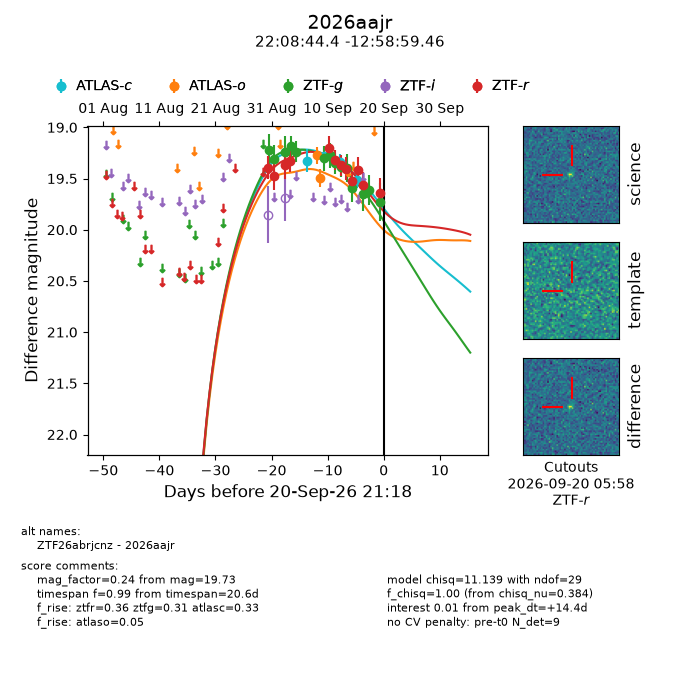
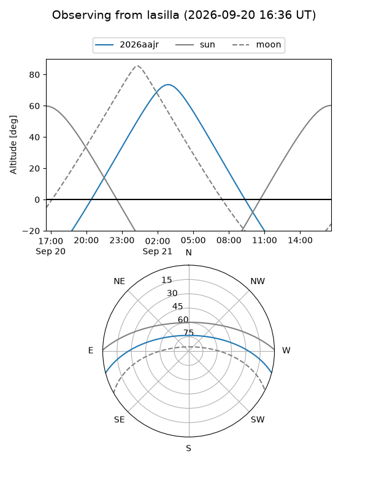
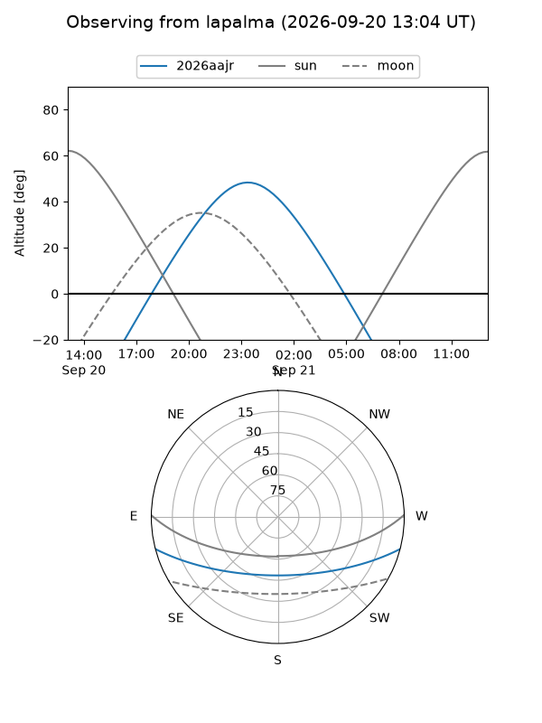
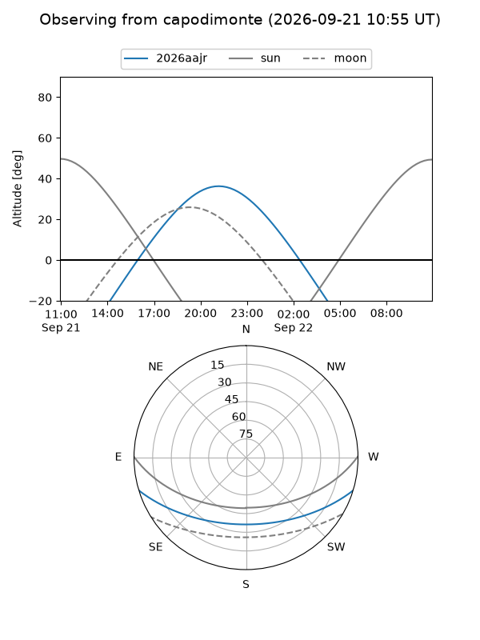
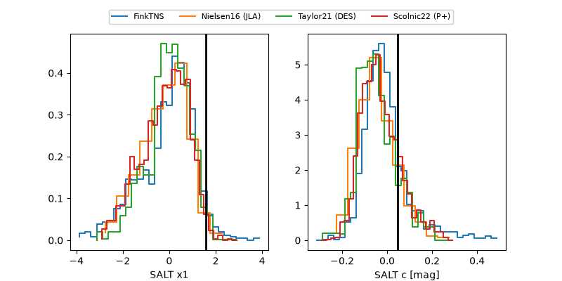

2026aajr
Target 2026aajr at 2026-09-21 09:15
Aliases and brokers:
FINK-ZTF: ztf.fink-portal.org/ZTF26abrjcnz
Lasair-ZTF: lasair-ztf.lsst.ac.uk/objects/ZTF26abrjcnz
ALeRCE-ZTF: alerce.online/object/ZTF26abrjcnz
YSE-PZ: ziggy.ucolick.org/yse/transient_detail/2026aajr
TNS name: wis-tns.org/object/2026aajr
Direct TNS query: direct search
alt names
ZTF26abrjcnz (ztf,fink_ztf)
2026aajr (tns,yse)
Coordinates:
equatorial (ra, dec) = 332.1852,-12.98318
equatorial (HMS+DMS) = 22:08:44.44,-12:58:59.46
galactic (l, b) = (45.1084,-49.47998)
Flags:
TNS type: nan
peak dt: +14.9
Photometry:
last atlasc=19.52, atlaso=19.49, ztfg=19.73, ztfr=19.64
4 atlasc, 2 atlaso, 14 ztfg, 12 ztfr detections
Lightcurve

Visibility



Additional plots
